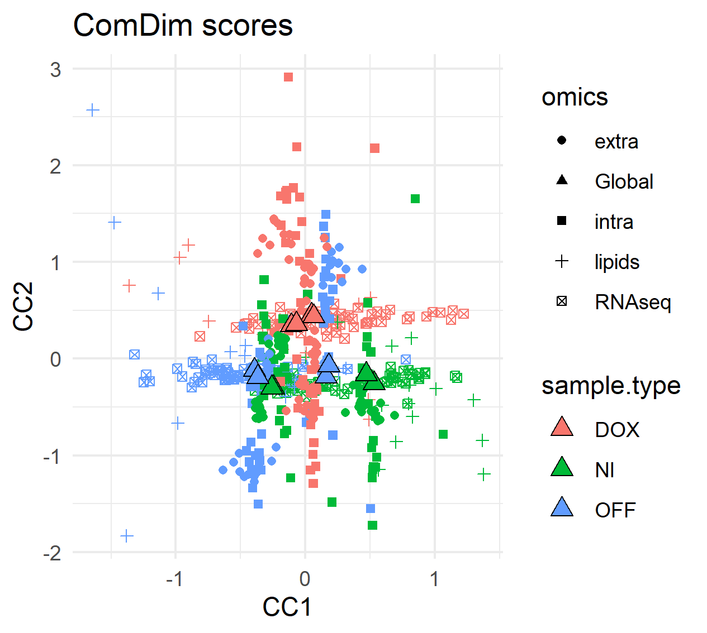
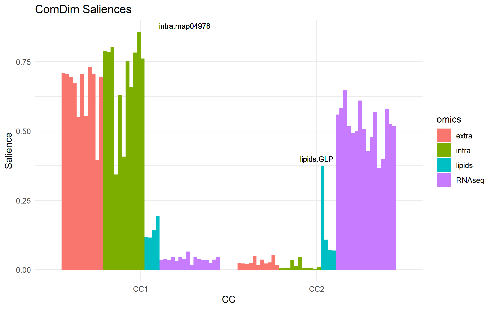
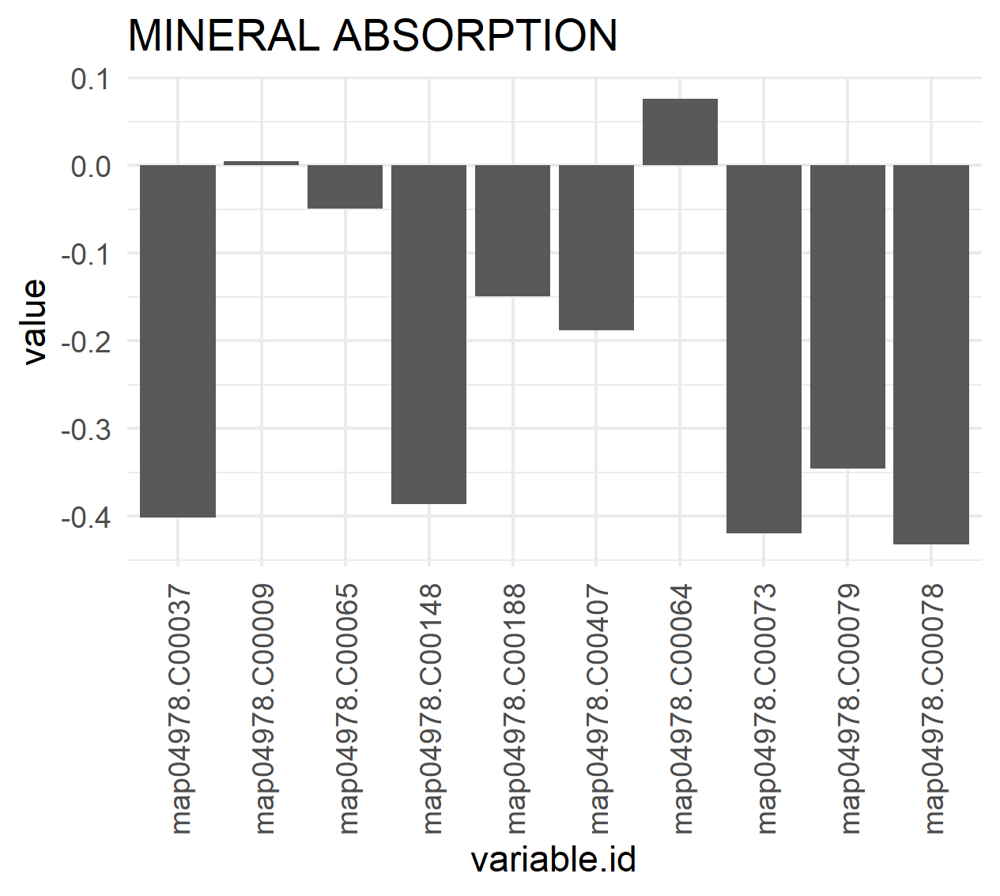
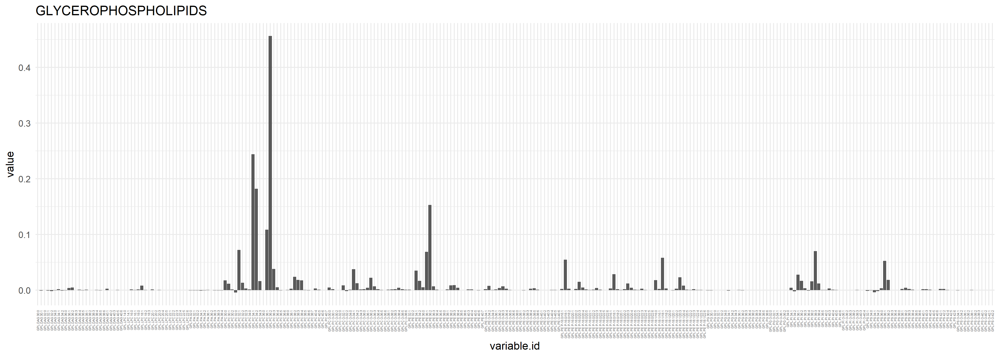
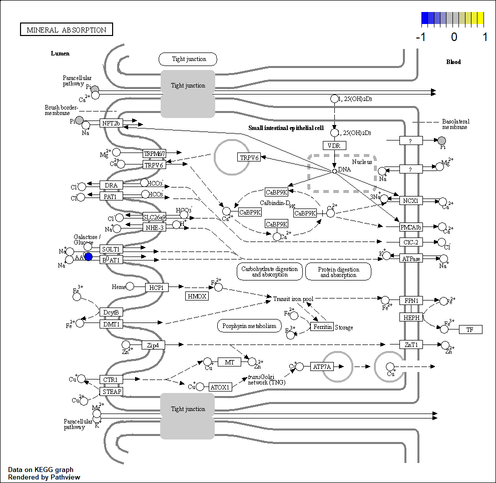
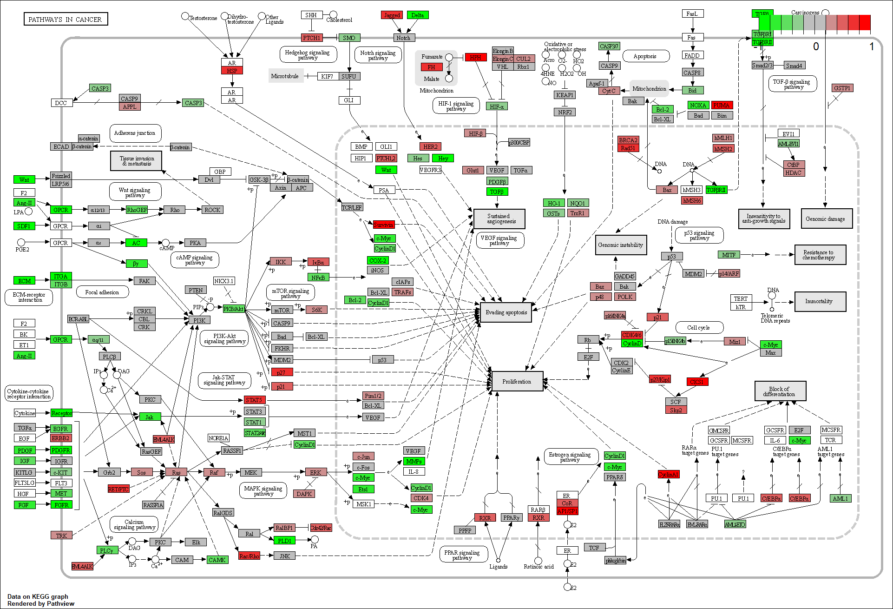

Chapter 5 Data from a single omics data are multi-blocks
Metabolic pathways are composed by a group of related metabolites.
Extrapolating this concept into the MultiBlock domain, it is possible to
convert a metabolomics dataset into a MultiBlock, where each of
the blocks will be characteristic of one metabolic pathway.
This strategy can be applied to other types of omics datasets. For
example, transcriptomics datasets can be transformed to
MultiBlocks by the Gene Ontology information, and phylogenetic
data can be split according to any of the taxonomic levels (class,
family, genus, species,…).
In the R.ComDim package, this data transformation can be mediated with
the ExpandMultiBlock() function and a reference metadata file with the
list of categories each variable can be listed in. In the resulting
MultiBlock, a variable will be included in as many blocks as groups
(i.e. molecular function) it belongs to.
Since the blocks from this MultiBlock are related to a specific
biological role, the ComDim analysis can be used to determine the
most important biological roles in the studied dataset. This strategy
has been used in Wigger et al., Nature
Metabolism
3, 1017–1031 (2021).
## func_cat lipid
## 1 Storage CE 14:0
## 2 Storage CE 14:1
## 3 Storage CE 15:0
## 4 Storage CE 16:0
## 5 Storage CE 16:1
## 6 Storage CE 16:2lipidsMB <- ExpandMultiBlock(data = lipids, metadata = metadata_lipids,
minblock = 0, loquace = FALSE)
blockNames(lipidsMB)## [1] "Storage" "SP" "ST" "GPL"In lipidsMB, blocks represent the different groups of structural
lipids (storage lipids, sphingolipids, sterol lipids, and
glycerophospholipids).
We can continue with the other omic blocks.
extraMB <- ExpandMultiBlock(data = extra, metadata = KEGG_table_metabolites,
minblock = 10, loquace = FALSE)
intraMB <- ExpandMultiBlock(data = intra, metadata = KEGG_table_metabolites,
minblock = 10, loquace = FALSE)
RNAseqMB <- ExpandMultiBlock(data = RNAseq3,
metadata = metadata_RNAseq3,
minblock = 500, loquace = FALSE)In the MultiBlocks above, we only kept those blocks containing equal
or more than minblock variables (i.e. only the RNAseq-related blocks
containing 500 or more variables were kept). In order to find the most
relevant pathways, ComDim will consider all blocks equally important,
causing that the variables from the smallest blocks will contribute more
to the final model than the variables from the largest blocks. Then, the
minblock filter is applied to avoid that the smallest blocks (which
usually relate to poorly-characterized biological roles, and thus hardly
interpretable) influence the ComDim model construction.
Let’s continue with the example from before, but before the ComDim analysis we can apply some data transformations.
# Blocks are relabelled for clarity
blockNames(lipidsMB) <- paste("lipids", blockNames(lipidsMB), sep = '.')
blockNames(intraMB) <- paste("intra", blockNames(intraMB), sep = '.')
blockNames(extraMB) <- paste("extra", blockNames(extraMB), sep = '.')
blockNames(RNAseqMB) <- paste("RNAseq", blockNames(RNAseqMB), sep = '.')
allMB2 <- MultiBlock(Data = list(RNAseqMB = RNAseqMB,
lipidsMB = lipidsMB,
intraMB = intraMB,
extraMB = extraMB),
ignore.names = FALSE)Now, all 4 MultiBlocks were merged into a single MultiBlock, and
each block contains a suffix denoting the omics data type.
We apply some data pre-processings:
# We apply some pre-processings
library(DESeq2)
# Remove blocks relative to map01100
# (not very informative, it's the map with all metabolic pathways)
allMB2 <- ProcessMultiBlock(allMB2,
blocks = which(grepl('map01100', blockNames(allMB2))),
# All blocks with map01100 are deleted, since ncol(x) is always > 0.
FUN.SelectBlocks = function(x){ncol(x) < 0})
# Calculate the absolute maximum from the RNAseq data.
maxMB <- max(MultiBlock2Matrix(allMB2,
blocks = grep('RNAseq', blockNames(allMB2))
),
na.rm = TRUE)
# Exclude normalized variables with max intensity reported below 0.1%
# of the max from all RNAseq blocks.
allMB2 <- ProcessMultiBlock(allMB2,
blocks = grep('RNAseq', blockNames(allMB2)),
FUN.SelectVars = function(x) {apply(x,2,max) > maxMB * 0.001})
# Add 1 to each value in RNAseq data to remove 0s.
allMB2 <- NAInfRemoveMultiBlock(allMB2,
blocks = grep('RNAseq', blockNames(allMB2)),
na.method = 'fixed.value.all',
constant = 1)
# Do rlog transform of the RNAseq data.
allMB2 <- ProcessMultiBlock(allMB2,
blocks = grep('RNAseq', blockNames(allMB2)),
# Normalize rlog transcript counts
FUN = function(x){t(DESeq2::rlog(t(x)))})
# Replace NAs by random noise
allMB2 <- NAInfRemoveMultiBlock(allMB2, na.method = 'random.noise')
# Normalize (mean-center and divided by each block-norm)
allMB2 <- NormalizeMultiBlock(allMB2, method = 'norm')We continue with the ComDim analysis:
A first look at the scores can tell us how the blocks relate to the sample type.
scoresTable <- MakeComDimScoresTable(model = resultsPCA2)
scoresTable_wider <- scoresTable %>%
mutate(sample.type = case_when(grepl('DOX', sample.id) ~ 'DOX',
grepl('NI', sample.id) ~ 'NI',
grepl('OFF', sample.id) ~ 'OFF')) %>%
dplyr::select(sample.id, sample.type, block.name, scores.type.dim, value) %>%
dplyr::group_by(sample.id, sample.type, scores.type.dim, block.name) %>%
pivot_wider(names_from = scores.type.dim, values_from = value) %>%
mutate(omics = case_when(grepl('RNAseq', block.name) ~ 'RNAseq',
grepl('lipids', block.name) ~ 'lipids',
grepl('extra', block.name) ~ 'extra',
grepl('intra', block.name) ~ 'intra',
grepl('Global', block.name) ~ 'Global'))
ggplot(data = scoresTable_wider) +
geom_point(aes(x = T.scores1, y = T.scores2, color = sample.type, shape = omics)) +
geom_point(aes(x = Q.scores1, y = Q.scores2, fill = sample.type),
size = 3, shape = 24, color = 'black') +
theme_minimal() +
labs(title = 'ComDim scores', x = 'CC1', y = 'CC2')
Figure 5.1: Scores
The metabolomic and the RNAseq profiles appear to be very orthogonal (uncorrelated), since intra and extra does not change much (within each group) in CC2 whereas the RNAseq does not change much in CC1. For RNAseq molecular functions, CC1 separates OFF from NI and DOX. CC2 separates DOX from NI and OFF. Despite this, NI seems to be different from DOX and OFF at the lipidomic level.
5.1 Molecular functions
Let’s start by looking at the saliences:
# Plot saliences
saliences2 <- resultsPCA2@Saliences %>%
as.data.frame() %>%
mutate(dataset = rownames(.)) %>%
pivot_longer(cols = c('CC1','CC2'),
names_to = 'CC',
values_to = 'Salience') %>%
mutate(omics = case_when(grepl('RNAseq', dataset) ~ 'RNAseq',
grepl('lipids', dataset) ~ 'lipids',
grepl('extra', dataset) ~ 'extra',
grepl('intra', dataset) ~ 'intra'))
ggplot(data = saliences2,
aes(x = CC, y = Salience, group = dataset )) +
geom_bar(stat = 'identity', position = 'dodge',
aes(fill = omics)) +
theme_minimal() +
geom_text(label = 'lipids.GLP', x = 2, y = 0.4, size = 3) +
geom_text(label = 'intra.map04978', x = 1.25, y = 0.88, size = 3) +
labs(title = 'ComDim Saliences')
CC1 is descriptive of metabolomics data (both intra and extra) CC2 is descriptive of RNAseq and glycerophospholipids (lipids.GLP) The most altered molecular function is map04978 (mineral absorption), in the “intra” data.5.1.1 The molecular pathways
By inspecting the loadings, we can have an idea of the most altered omics features in the block. We will plot now the loadings for the two most relevant blocks as seen in the previous section.
# MINERAL ABSORPTION
LoadingsTable <- MakeComDimLoadingsTable(model = resultsPCA2,
block = 'intra.map04978',
dim = 1)
ggplot(LoadingsTable, aes(x = variable.id, y = value)) +
geom_bar(stat = 'identity') +
labs(title = 'MINERAL ABSORPTION') +
theme_minimal() +
theme(axis.text.x = element_text(angle = 90, vjust = 0.5, hjust=1))
# GLYCEROPHOSPHOLIPIDS
LoadingsTable <- MakeComDimLoadingsTable(model = resultsPCA2,
block = 'lipids.GPL',
dim = 2)
ggplot(LoadingsTable, aes(x = variable.id, y = value)) +
geom_bar(stat = 'identity') +
labs(title = 'GLYCEROPHOSPHOLIPIDS') +
theme_minimal() +
theme(axis.text.x = element_text(angle = 90, vjust = 0.5, hjust=1,
size = 3))
Figure 5.2: Mineral absorption

Most important changes in the GPL group occur for PC36:2, PC34:1, PC:34:2, PE36:2, PC36:1,…
We can also plot the loadings into KEGG pathway maps (if the omics variables can be matched with the KEGG identifiers).
Here is an example for the metabolomics data:
# MINERAL ABSORPTION
# Prepare input data
loadingVector <- LoadingsTable$value * 10 # 10 is a factor used to maximize
# the color contrast in the resulting
# KEGG map.
names(loadingVector) <- gsub("map04978.","",LoadingsTable$variable.id)
library(pathview) # From Bioconductor
pv.out <- pathview(cpd.data = loadingVector,
pathway.id = "04978",
species = "mmu",
out.suffix = "ComDim")The map is saved in the working directory:

And here, there is an example for the RNAseq-data (block mmu05200, “Pathways in Cancer”):
LoadingsTable <- MakeComDimLoadingsTable(model = resultsPCA2,
block = 'RNAseq.mmu05200',
dim = 2)
# Prepare input data
loadingVector <- LoadingsTable$value * 10 # 10 is a factor to maximize
# the color contrast in the
# resulting KEGG map.
names(loadingVector) <- gsub("mmu05200.","",LoadingsTable$variable.id)
library(pathview) # From Bioconductor
pv.out <- pathview(gene.data = loadingVector,
pathway.id = "05200",
species = "mmu",
out.suffix = "ComDim")